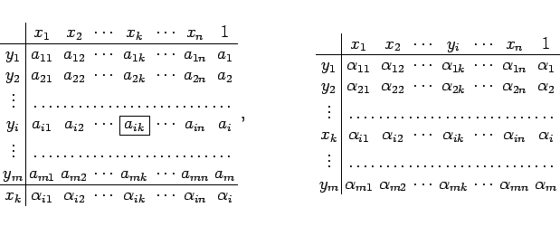

Inhalt Index DeskTop Bronstein

 Lineare Algebra Lineare Gleichungssysteme Lineare Systeme, Austauschverfahren Austauschverfahren
Lineare Algebra Lineare Gleichungssysteme Lineare Systeme, Austauschverfahren Austauschverfahren


Wenn in (4.104a) ein Element aik von Null verschieden ist, dann kann in einem sogenannten Austauschschritt die Variable yi zur unabhängigen und die Variable xk zur abhängigen Variablen gemacht werden. Der Austauschschritt ist das Grundelement des Austauschverfahrens, mit dessen Hilfe z.B. lineare Gleichungssysteme und lineare Optimierungsaufgaben gelöst werden können. Der Austauschschritt wird mit Hilfe der Schemata
|  | (4.105) |
durchgeführt, wobei das linke Schema dem System (4.104a) entspricht.